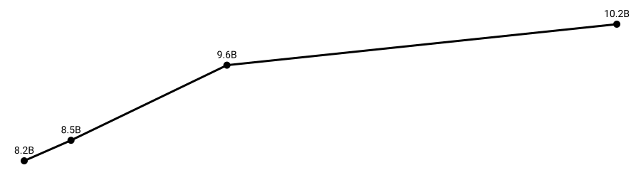

1) 核計畫／監督受限
Facts：IAEA 針對伊朗核查與監測有季度性報告。
Inference：監督中斷或談判失敗，可能提高衝突風險溢價。
Global Population & Geopolitical Risk Dashboard
作者：
資料由 scripts/clean.py 清理 raw.txt 輸出 data/cleaned.json，前端再讀取顯示。

每個風險因子都分「事實資料」與「推論」，並提供來源。
Facts：IAEA 針對伊朗核查與監測有季度性報告。
Inference：監督中斷或談判失敗，可能提高衝突風險溢價。
Facts：EIA 指出 Hormuz 為全球重要油氣運輸咽喉。
Inference：若通道受阻，油價與供應鏈波動可能擴散。
Facts：OFAC 維持 Iran Sanctions 計畫並更新指南。
Inference：金融與油收壓力上升，可能提高內部不穩定性。
Facts：多家研究機構討論伊朗代理人網路對區域安全的影響。
Inference：代理人衝突若疊加能源通道事件，可能形成複合風險。
| 風險因子 | 機率（低/中/高） | 影響程度 | 資料來源 |
|---|---|---|---|
| 核計畫／監督受限 | 高 | 高 | IAEA（GOV/2025/24） |
| Hormuz 通道中斷 | 中-高 | 高 | EIA（Hormuz chokepoint） |
| 制裁收緊／執法升級 | 高 | 中-高 | OFAC（Iran sanctions） |
| 代理人衝突外溢 | 中 | 高 | Brookings（proxy forces） |
AI 偏誤控管：地緣政治議題容易把「推論」說成「事實」。因此本頁以 Facts / Inference 分層，並要求每個 Fact 都能追溯來源。